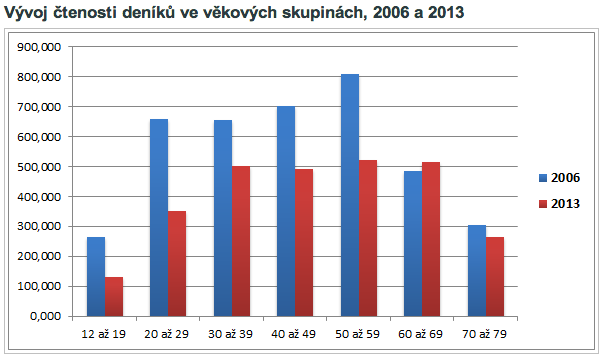
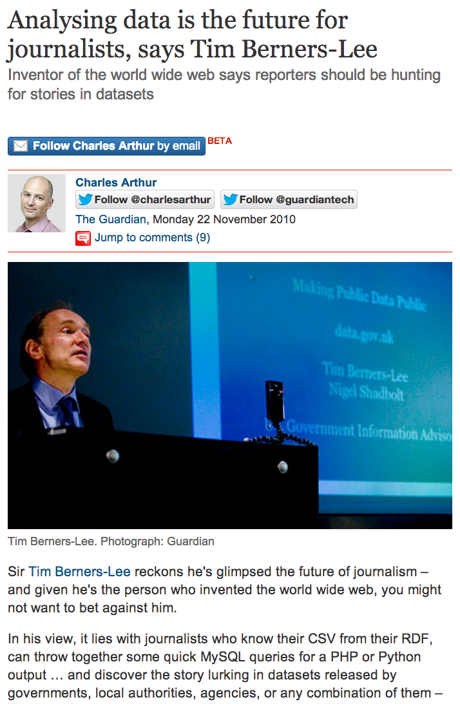
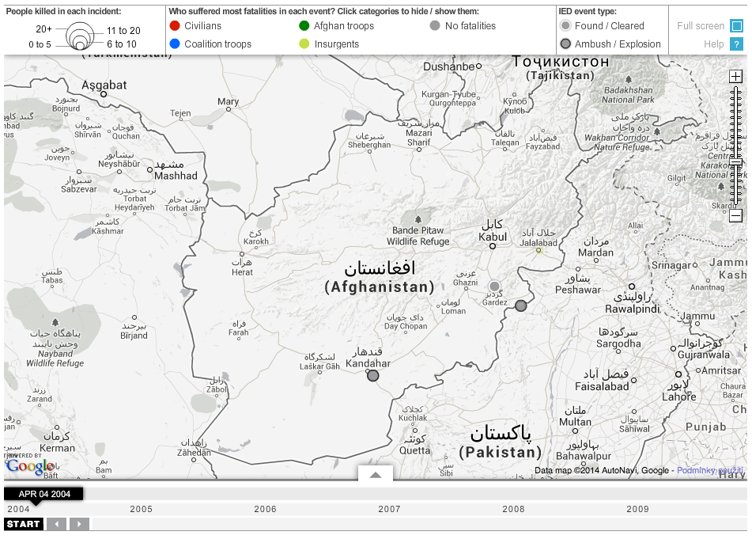
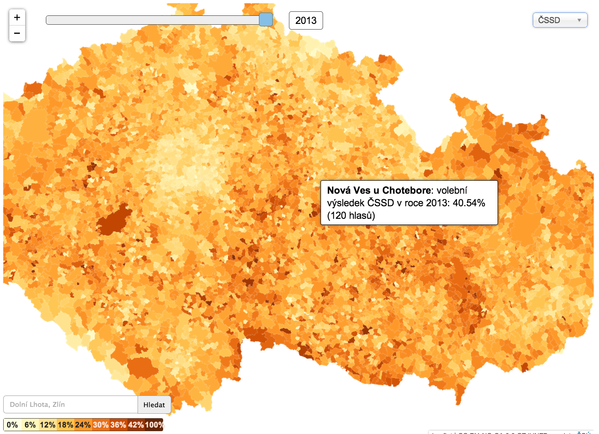
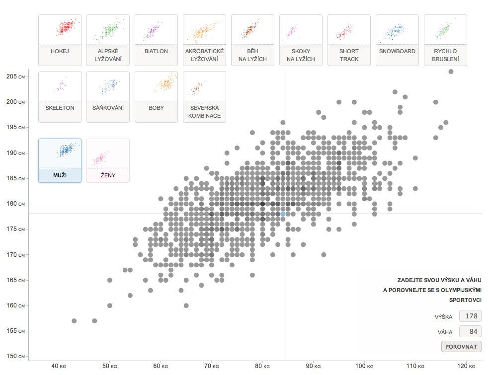
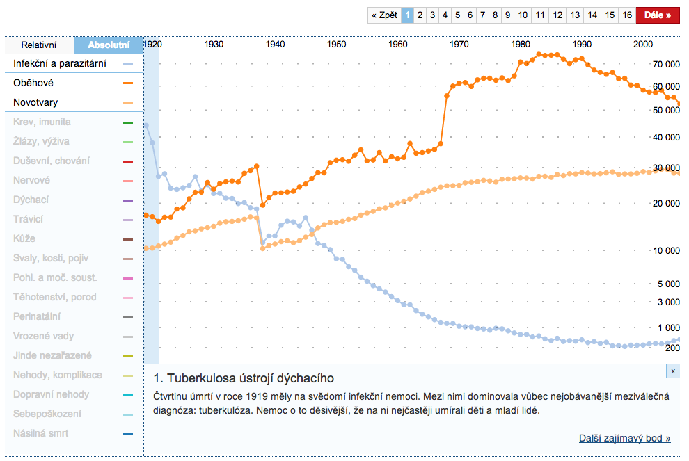
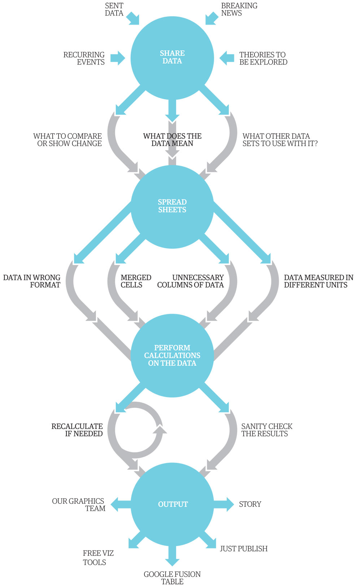

Úvod do datové žurnalistiky
Petr Kočí
petr.koci@economia.cz
@tocit
FF UK, 25. února 2014
Tato prezentace
http://ddj.pribehy.cz/ffuk
- Hospodářské noviny (založeno 1990)
- Datablog (založen v dubnu 2012)
Jak jsou na tom noviny
Informace jsou levné...

... porozumění je drahé
Co s tím?
Příklady ze světa: Parkování v New Yorku

Další příklady z NYT
Guardian: Data z WikiLeaks
Další příklady z Guardianu
Konta v daňových rájích

Sponzoři německých politických stran

Další příklady ze světa
Některé naše projekty

Všechna auta odtažená v Praze

Kam se podělo 5,4 miliard korun?

Prezidentská kalkulačka

Rychlé a špinavé grafy

Předpovědi HDP

Dluhy obcí

Kdo prodává zkažené jídlo

Prezidentská časová osa

Velmi křehké vztahy

Mapa moci

Co vám opravdu přinesly změny v jízdních řádech?

Ozbrojení a nebezpeční

Kdy umřete

Kriminalita podle dat od operátorů

Proč jsou lidé v nemocnicích

Jak aktivní byl váš poslanec

Podrobné volební mapy ()
Hodíte se spíš na bobování, nebo na skoky na lyžích?
Délka zdravého života klesá, prodlužujeme stonání
Co jsou data?
rusky: данные
francouzsky: données
latinsky data, plurál z datum (“to, co je dáno”)
Nás zajímají především data
- strukturovaná
- strojově zpracovatelná
- týkající se tématu, který je předmětem veřejného zájmu
- nejčastěji tabulky (XLS, CSV, SQL...)
- nebo "stromy" (XML, JSON..,)
Data != Pravda
"Data is structured information with potential for meaning."

Aby nám data k něčemu byla, musíme je nejen získat, ale také vyčistit, přeskupit, analyzovat a interpretovat.
Důležité otázky
- Odkud data přicházejí? (příklad)
- Jaká je motivace toho, kdo data shromažďuje?
- Jaké metody byly při shromažďování dat použity a jak se měnily v čase?
- Jsou data kompletní? Co chybí a proč?
- Co data znamenají a čím mohou být užitečná pro naše čtenáře?
Časté problémy s daty
- Nespolehlivá, rozbitá a špinavá data plná chyb
- Neochota či neschopnost institucí data poskytovat ve strojově zpracovatelné podobě (viz neplnění slibů z Open Government Partnership)
- Data v uzavřených proprietárních formátech
- Časté změny v metodologii znemožňují porovnávání
Co je žurnalistika?
(mlhavé vzpomínky z FSV)
- dominantní paradigma:hlídací psi demokracie, kladení nepříjemných otázek mocným, prostor pro veřejnou debatu, čtvrtá (sedmá) velmoc, kulturní instituce, strážci jazykových norem, hlasatelé národních hodnot...
- alternativní paradigma:falešné vědomí,upevňování hegemonie, užití a uspokojení, betonování společenské struktury, ničení volného času, zaplňování prostoru...
Jak se vidí novináři
- Zjistit
- Pochopit
- Odvyprávět
Jak se vidí datoví novináři
- Zjistit: získat data (veřejně dostupná, scrapování, zákon 106/99...)
- Pochopit: vyčistit a analyzovat data (statistická analýza, třídění, filtrování a spojování, předběžné vizualizace...)
- Odvyprávět: prezentovat data (vizualizace, data-driven storytelling, lepší otázky...)
Je datová žurnalistika něco úplně nového?
John Snow a cholera v Londýně

Philip Meyer (blog)

One of the earliest examples of computer assisted reporting was in 1967, after riots in Detroit, when Meyer, on temporary assignment with the Detroit Free Press, used survey research, analyzed on a mainframe computer, to show that people who had attended college were equally likely to have rioted as were high school dropouts. -- Wikipedia
Stanislav Gross

1967: Computer Aided Reporting
2000: Database Journalism
2005: Data-driven Journalism
2010: Data Journalism, "Fact-based journalism"...
Budoucnost: Newsgames, Drone Journalism, Machine Learning ...
Ať tomu říkáme jak chceme, pořád je to žurnalistika. Jen se pořád učí pracovat s novými komunikačními technologiemi (telegraf, telefon, psací stroj, diktafon, počítač, internet...)
Vybrat si správný nástroj
Problém s geeky: Rádi používají technologie prostě proto, že to jde.
Ale je efektivní zkoušet stále něco nového?
"Než začnete psát scraper nebo podávat žádost podle zákona 106/99, zkuste na úřad prostě zavolat."
Doporučení: Vyberte si jeden dostatečně všestranný nástroj, toho se držte a postupně se v jeho používání zdokonalujte (R, Python, JavaScript, SPSS – je to na vás).
Když to vlastně není nic nového, proč se teď o datové žurnalistice tolik mluví?
- krize tradičních, především tištěných médií (fáze očekávání –> fáze zklamání)
- více snáze dostupných nástrojů (+ marketingové rozpočty jejich výrobců)
- více veřejně dostupných dat (dříve - nyní)
- exploze všemožných dat, v nichž je stále obtížnější se vyznat (oddělování zrně od plev, signálu a šumu)
- "buzzword", marketingová bublina (přihlásili byste se na tento předmět, kdyby se jmenoval programování pro novináře?)
Rizika datové žurnalistiky
- časově náročná
- nejisté výsledky
- poměr cena/výkon
- přehypovaná
- samoúčelná? (ilustrování stále stejně povrchních článků animovanými obrázky)
Proces a nástroje datové žurnalistiky
Nástroje, které se osvědčily nám
Scrapování
- CTRL+C, CTRL+V
- Programování: R, Python, JavaScript.... Vždy stejný princip
- Table Capture Chrome Plugin
- Google Spredsheet
- Import.io
- Outwit Hub (Scraping For Journalists)
- Open Refine - Tutorial 1, Tutorial 2
- Scraperwiki
Nejen tabulky, ale také text, obrázky....
Tahání data z PDF
Čištění a přeskupování dat
- Google Spreadsheet nebo Excel
- Open Refine
- Programování: R, Python, JavaScript....
- Data Wrangler
Vizualizace Dat
Pojďte si hrát s daty!
Zkusíme vyrobit mapu podobnou této nebo této.
Nejdřív si ale vytvoříme ukázkový dataset: http://bit.ly/ffuk2014